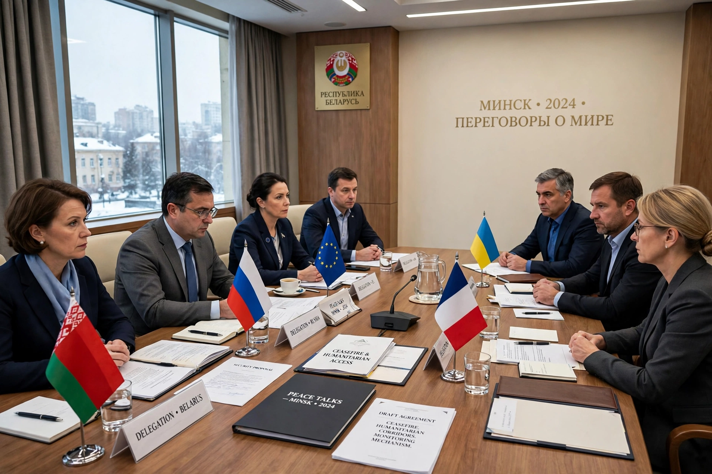

The Trilateral Contact Group on Ukraine (TCG), also known as the Minsk Group, was a group of representatives from Ukraine, the Russian Federation, and the Organization for Security and Co-operation in Europe (OSCE) established in 2014 to negotiate a diplomatic resolution to the war in Donbas. Meeting principally in Minsk, Belarus, the group produced the Minsk Protocol (September 2014) and the Minsk II agreement (February 2015). Representatives of the self-proclaimed Donetsk and Luhansk People's Republics participated in its sessions without being signatories as parties in the same sense. The group ceased meaningful operation following Russia's full-scale invasion of Ukraine in February 2022.

| Trilateral Contact Group on Ukraine | |
|---|---|
| Formation | 2014 |
| Members | Ukraine, Russian Federation, OSCE |
| Meeting place | Minsk, Belarus (later also by videoconference) |
| Purpose | Negotiated settlement of the war in Donbas |
| Key outcomes | Minsk Protocol (2014), Minsk II (2015) |
The group was created in mid-2014 as fighting escalated in eastern Ukraine, with former Ukrainian president Leonid Kuchma representing Kyiv, Russian ambassador Mikhail Zurabov representing Moscow, and Swiss diplomat Heidi Tagliavini representing the OSCE chairperson-in-office. On 5 September 2014 the group signed the Minsk Protocol, a twelve-point ceasefire plan that was never fully implemented. After renewed fighting, the "Package of Measures for the Implementation of the Minsk Agreements" (Minsk II) was signed on 12 February 2015 following marathon talks by the Normandy Format leaders (Ukraine, Russia, France and Germany) and endorsed by UN Security Council Resolution 2202.
To work through the agreements, the TCG operated four working subgroups: on political issues, security issues, humanitarian issues (including prisoner exchanges — it brokered the major exchanges of December 2017 and December 2019), and economic issues. Periodic local ceasefires for holidays, harvests and the school year were arranged through the group, though violations were constant. Disagreement over the "Steinmeier formula" and the sequencing of elections and border control stalled political progress for years.
Meetings moved online during the COVID-19 pandemic. After Russia recognised the Donetsk and Luhansk republics and launched its full-scale invasion on 24 February 2022, Ukraine declared the Minsk agreements dead and the group stopped functioning. Its OSCE chairmanship had passed from Tagliavini through Martin Sajdik to Heidi Grau, and finally to Mikko Kinnunen in 2021.
Minsk agreements · War in Donbas · Normandy Format · OSCE
From Wikipedia, the free encyclopedia.